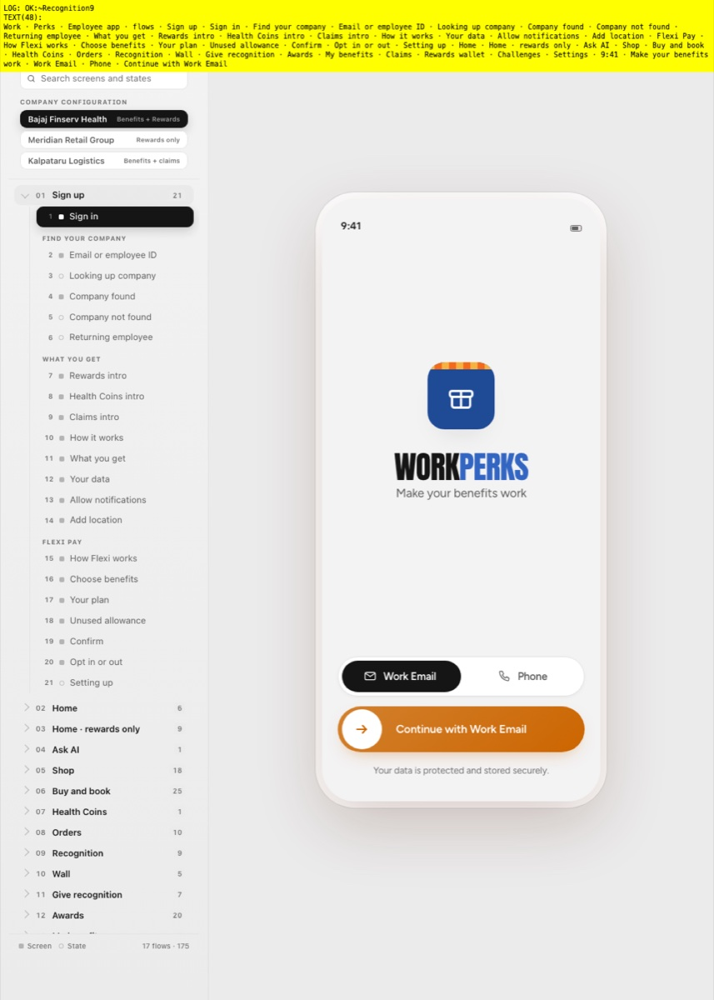
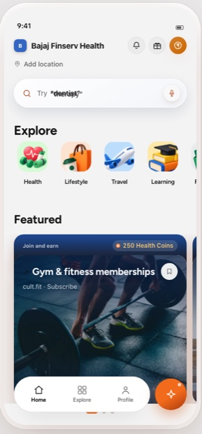
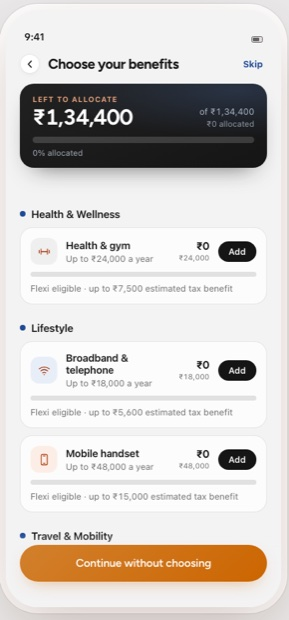
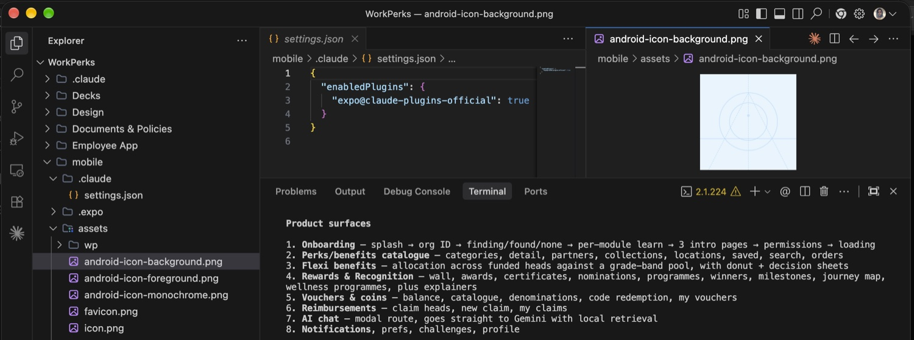

Sequential
- 01Brief
- 02Research
- 03Design
- 04Review
- 05Handoff
- 06Build
- 07QA
- sequential
- handoff-heavy
- artifact-oriented
- expensive iteration
- design separated from implementation
Rethinking how design teams work when AI becomes part of the product lifecycle. Every framework here is labelled for what it is — verified, experiment, or concept.
DesignOps / 03
It should change how the design organisation operates. I don't see AI as another tool bolted onto an existing process — I see it as a reason to rethink how product thinking, design, engineering, knowledge, quality and delivery fit together.
This page is part evidence and part argument, and it keeps the two apart. Where I have built something, there is a count or a screenshot. Where I am proposing something, it says so.
02 — The shift
The sequential model exists because iteration used to be expensive. When a change costs a handoff, a sprint and a QA cycle, you front-load the certainty. When it costs an afternoon, that logic stops holding.
ConceptThe AI-native model is a proposed operating approach
Both models are drawn from the source document. The second is an operating model I am arguing for, not a description of how every project I touch runs today — and the first is not wrong, it is what works when iteration is expensive. What changes is where the loop closes.
03 — The thesis
Deciding what matters, and owning the outcome.
Generating, exploring, scaffolding, drafting.
Components, rules, context and decisions that persist.
What shipped, what broke, what the next cycle inherits.
Each one is weaker without the others. AI without systemised knowledge regenerates the same decisions forever; knowledge without feedback goes stale; neither replaces the judgment call.
Concept
04 — The model
Select a layer to see what AI can contribute to it and what stays a human call.
Layer 01
Layer 02
Layer 03
More meaningful exploration before committing to a direction.
Layer 04
Components Documentation Handoff
Components Rules Context Variants Usage Feedback Evolution
Layer 05
Input neededThe source document deliberately leaves the engineering ownership boundary blank rather than guessing at it. It stays blank here too.
Layer 06
Design Build Validate Learn Improve
Layer 07
Design knowledge should compound instead of disappearing after delivery.
ConceptA proposed operating model, not an implemented process
Seven layers, from the source document. The point of the stack is that AI touches every one of them but owns none of them — each layer names what AI can contribute and what stays a human call.
05 — Responsibility
| Activity | AI contributes | Human remains responsible for |
|---|---|---|
| Problem framing | Pattern discovery | Define the real problem |
| Research synthesis | Summarisation | Interpret user context |
| Ideation | Generate alternatives | Select meaningful directions |
| UX flows | Explore options | Decide experience architecture |
| UI exploration | Generate variants | Define quality bar |
| Copy | Generate alternatives | Approve tone and meaning |
| Prototyping | Accelerate creation | Validate interaction |
| Coding | Generate implementation | Direct product behaviour |
| Testing | Identify issues | Decide severity and action |
| Documentation | Structure information | Establish truth |
| Design system | Detect patterns | Govern standards |
| Product analytics | Surface patterns | Make decisions |
| Product strategy | Challenge assumptions | Set direction |
AI expands the surface area of design. It does not remove accountability.
Concept
Read the right-hand column as the real job description. Every row on the left is work that still arrives needing review — a generated flow, a generated component, a generated paragraph of documentation is a draft with a confident tone, and nothing more than that until someone signs it off.
06 — In practice
A multi-surface employee benefits product. It is the reason this page is not purely a framework: I went from defining the product to working on the thing that runs, and the gap between those two used to be a handoff.



splash, org ID, per-module learn, intro pages, permissions
categories, detail, partners, collections, locations, saved, search, orders
allocation across funded heads against a grade-band pool, donut and decision sheets
wall, awards, certificates, nominations, programmes, winners, milestones, journey map
balance, catalogue, denominations, code redemption, my vouchers
claim heads, new claim, my claims
a modal route with local retrieval
preferences, challenges, profile
Surfaces as enumerated by the project's own repository walkthrough, shown in the terminal session further down this page.
07 — The build loop
I didn't stop at the design artefact. AI gave me a way to participate further into the product-development loop.

Input neededThe source document refuses to invent this boundary and so does this page. Describing a collaboration model I cannot evidence would undo the point of the rest of the section.
ExperimentA workflow I have actually run, evidenced by the repository and the session below
08 — Scale
Counted from the repository rather than remembered. These numbers describe size, and size alone proves nothing about quality or speed — but it does show the surface a designer can now reach.
35,718
lines of TypeScript
71
registered routes
28
UI primitives
VerifiedMeasured from the working tree on 2026-09-24
WorkPerks employee app — Expo / React Native / TypeScript. Counted from the working tree, excluding node_modules, build output and native project folders. Routes are the distinct names registered on a navigator in source.
Three different units, deliberately not combined. A route count, a file count and a line count measure different things and none of them is a measure of quality, speed or business impact. They are here to show the scale of the surface a designer can now reach into — nothing more. I am not claiming AI wrote this, that it was faster than an alternative, or that size is an achievement.
The portfolio previously recorded a snapshot of 67 routes, 28 UI primitives, 163 TS files and ~33,800 lines. Re-measuring the working tree gives the figures above: the primitive count is unchanged, the other three have grown. The older numbers are left visible here rather than quietly replaced.
Twenty-eight primitives, which is the part of the count I find most interesting — it is the only figure that has not moved since the earlier snapshot. A system stabilises while the product on top of it keeps growing.
Every module in src/ui, listed by filename. This is the component vocabulary the app is actually built from.
09 — The system
Generation 1
A collection of reusable components.
Verified
Generation 2
Components + rules + governance.
Verified
Generation 3
Components + rules + context + organisational knowledge + AI assistance + validation.
Concept
Instead of teaching AI what the product looks like, teach AI how the product thinks.
ConceptGeneration 3 only
Generations 1 and 2 describe Capsule as it exists — tokens, components, rules, governance. Generation 3 is a proposal. Capsule does not generate designs or validate output automatically today, and this page does not suggest it does.
10 — The organisation
Everything above this point is one designer's workflow. This is the part that makes it an operating system rather than a personal habit.
Every designer understands: - product strategy - users - business model - technical constraints
Teams use AI to: - research - synthesise - analyse - explore
Designers create: - flows - prototypes - systems - interfaces - content
Designers work closer to: - frontend - APIs - backend - engineering
Teams validate: - usability - accessibility - visual quality - technical fidelity - product outcomes
Every project contributes knowledge back to: - design system - documentation - pattern library - team playbook
The loop only closes if finished work is written back
Concept
Discuss: - where AI was used - what worked - where it failed - what required human judgment - reusable prompts/workflows
Review: - implementation - component behaviour - technical constraints - design-system consistency
Review: - hallucinations - incorrect assumptions - accessibility - brand drift - privacy/security considerations - output quality
Store: - successful workflows - reusable instructions - design-system context - product context - failure cases
Track emerging patterns: - assistants - recommendations - conversational search - generative UI - adaptive experiences
ConceptProposed rituals, not current practice
Five rituals from the source document. None of these runs in my organisation today — they are what I would introduce, and saying otherwise would be the easiest lie on this page.
11 — Governance
What information can be shared with AI systems?
What data, credentials, repositories or customer information must never be exposed?
How are AI-generated outputs verified?
How do we prevent AI-generated experiences from drifting from brand principles?
How do we prevent AI from generating inaccessible experiences?
How do we identify problematic recommendations, language or assumptions?
Who owns the final decision?
AI can generate an output. A responsible human must own the outcome.
ConceptA proposed framework; no organisational policy is claimed
Each category is a question rather than a policy, because a policy I have not written and an organisation has not adopted would be a claim I cannot make. These are the seven things I would want answered before a team starts.
12 — Measurement
An empty measurement frame, shown empty on purpose.
ConceptNo values recorded in any source
26 candidate metrics across six categories, and not one of them has a value. No baseline for any of these exists in my source files, so every cell reads “metric to establish”. A page like this is where fabricated percentages normally appear; putting the empty frame on display instead is the more useful artefact, because the first real job is deciding which four of these are worth instrumenting.
13 — The blueprint
Repetitive, rule-shaped work with a checkable output.
Work where AI reduces manual effort but a human still steers.
Work where AI informs a decision a human makes.
Decisions that carry accountability and stay with a person.
Concept
14 — The role
Nothing on the left stops mattering. Hiring, growing people, running reviews, protecting quality, managing stakeholders — none of that is displaced. The right-hand column is what gets added, and it is additive in the most literal sense: more surface, same accountability.
The opportunity is not simply to design faster. It is to build a design organisation that learns faster.
Source: 3. AI-Design-Operating-System.md, my own strategy document. The frameworks on this page are parsed from it at build time rather than retyped, and the repository figures are measured from the WorkPerks working tree. Where the document marks something as needing input, this page leaves it blank.